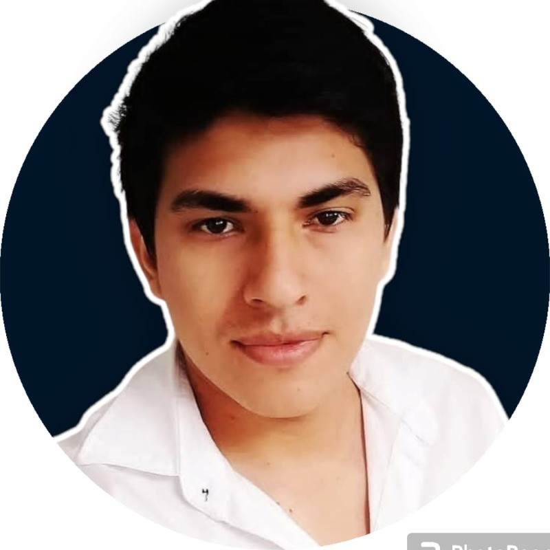

Olá, meu nome é Pabricio lima



Desenvolvedor Web Front-End. Atualmente, estou cursando a pós-graduação em Engenharia de Software, com previsão de conclusão em 2024. Além disso, exerço a função de instrutor de informática no Abrigo do Marinheiro da Marinha do Brasil.
Minha jornada até a tecnologia foi uma transição empolgante vinda do campo comercial. Inicialmente, desenvolvi habilidades em JavaScript, HTML, CSS e Node.js, que serviram como alicerce do meu conhecimento. Agora, estou empenhado em expandir ainda mais meu potencial, mergulhando em tecnologias como React e TypeScript.
Sou conhecido por ser um profissional colaborativo e comunicativo, e minha capacidade de trabalhar de forma excepcional em equipe é uma das minhas principais fortalezas. Tenho experiência prática com metodologias ágeis, como Scrum e Kanban, que garantem que nossos projetos sejam desenvolvidos de maneira eficaz e colaborativa.
O que mais me motiva é a paixão por ensinar e inspirar outras pessoas a explorarem o mundo da tecnologia. Acredito que a tecnologia é o motor da inovação, e estou determinado a contribuir para um mundo mais inovador e tecnologicamente avançado.
Além de minhas habilidades técnicas, estou em constante busca por desenvolver minhas habilidades interpessoais, como comunicação efetiva, pensamento crítico e resolução de problemas.
Estou empolgado com a oportunidade de participar do curso de Front End da Ada Tech, onde poderei aprimorar ainda mais minhas habilidades.